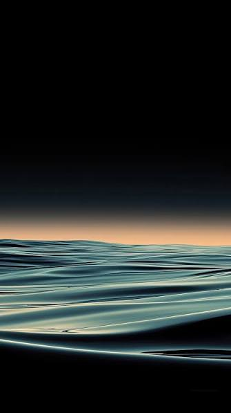
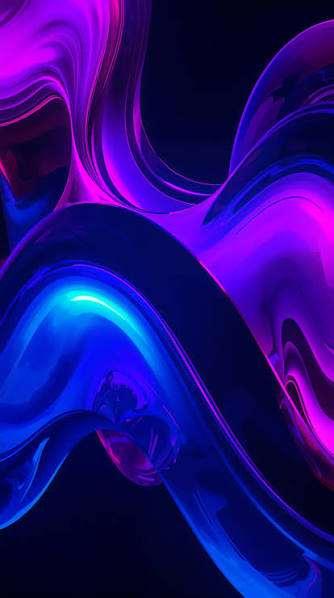
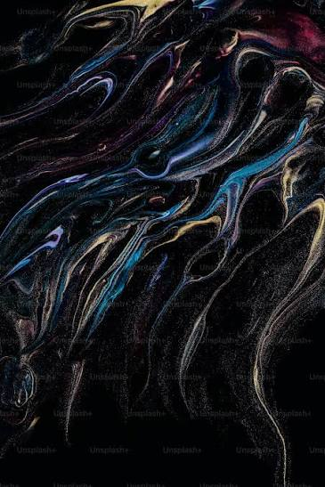
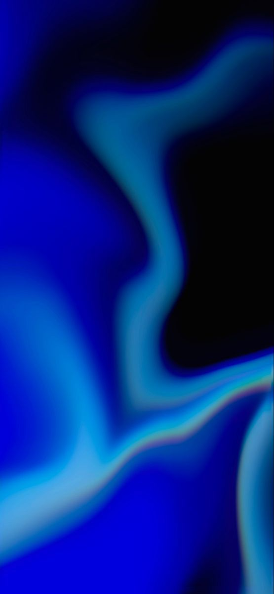
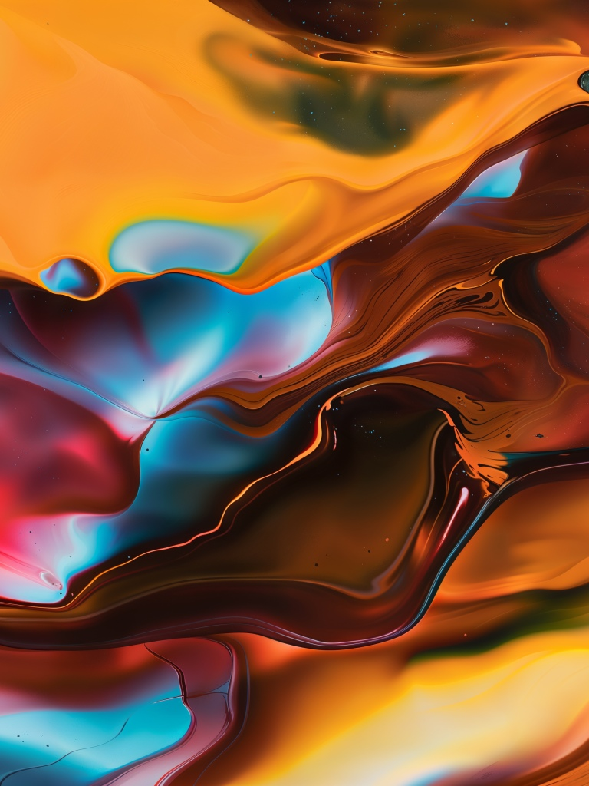

Lo tuyo,
cerca.
cerca.
Halo cercano ↗
Clara, humana y centrada en el producto. Teléfono, guardián y anillos finos. La continuidad más directa con la app.
Explorar borrador AUna landing para explicar Escudo, abrir la visión de ciudad e invitar a participar. Tres portadas sobre una misma estructura de contenido.
Leer el plan de contenido, estilo y producción →Portada A + una transición de luz de B + la explicación de red de C. La interfaz conocida aporta confianza; la atmósfera da identidad; los nodos explican por qué participar importa.
Borradores locales. Los ejemplos son ilustrativos, las funciones previstas están identificadas y los botones de interés no recogen datos. Los tres recorridos inferiores son iguales para comparar la dirección visual.
Tomar luz, fluidez y profundidad; llevarlas a noche, aurora y bruma. Los borradores usan formas originales en CSS y SVG. Estas imágenes se muestran como referencias.




